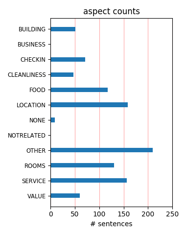
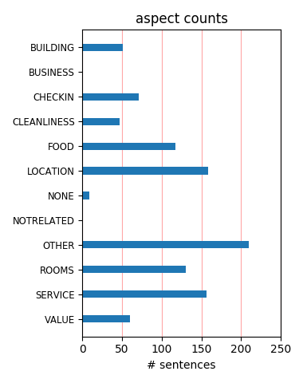

Other reviewers could not have said it better about this hotel. Location is perfect. The service, rooms, etc was perfect. To end a perfect day/evening in Paris is the hotel bar, Cafe Laurent, which has live jazz Wed-Sat. nights. You won't regret staying here.
Wonderful hotel in a central location, staff is wonderful and very helpful at getting reservations, laundry, room service, breakfast, etc. Cozy bar in corner. Quiet, only 54 rooms but a real treat afte we had stayed a more expensive places in Rome and Florence.
It was our second time staying at the D'Aubusson. It's the perfect hotel for us in Paris - great location, excellent service and comfortable rooms. The hotel is incredibly charming, but has all the amenities you need. For us, there is no reason to try any other hotel in Paris.
Brilliant hotel in a great St Germain location. Concierge very helpful and friendly. Thoroughly enjoyed the jazz evening - we caught an hour of it after Saturday dinner. Very good cocktails from the bar. Very nice, spacious, clean room. Hermes toiletries! Can't wait to go back.
This will be our 3rd time back to the Hotel d'Aubusson coming up in August. We can't wait to return. All of our clients & friends who stay here say it is just grand. Small, Boutique, great location, excellent staff, amenities - love the Hermes soaps, etc. Just a perfect place in Paris.
Perfectly located hotel within walking distance of most Parisian sights. The most helpful, friendly concierges . The romance package is truly wonderful. The champagne lunch in the courtyard, and the violin concert which were part of the package were highlights of our trip.Would love to return again.
My granddaughters and I went for seven days of Spring Break. The Winter Package allowed us to enjoy Paris despite cold rainy weather. GREAT hotel especially for a triple room. The staff all helped make our stay truly outstanding. Their recommendations for restaurants were terrific. We want to go back again.
We loved our stay here. The location is excellent and it is truly a "French" experience. The rooms are spacious and very clean and we loved the courtyard as well as the nightly piano playing downstairs. The staff were extremely friendly and so helpful. When we return to Paris, we will definitely stay here again!
The room was neat, tidy and comfortable but a little too hot all the time (only a small gripe). The only other fault was it looked onto the road and it could be a little noisy at times. The service was excellent both at reception and elsehwere. The location is brilliant on the Left Bank but very near the Ile de la Cite.
Just returned from France and had a wonderful stay at the Hotel d'Aubusson. The hotel is located close to the Lourve, Notre Dame and walking distance to many of the musuems. The staff could not have been more helpful and gracious. Our room was a little small, but very clean. There are many very good resturants in the neighborhood. I would definitely stay there again.
Conveniently located in the Left Bank, cozy bar and reception area, room on the smallish side (but that's usual in Paris) facing the street (excellent insulation). Jazz concerts can be annoying, if you don't like that kind of music or if you're in the mood for an early sleep. Private garage at a reasonable daily rate. Overall, good value for money (if you get a good rate).
What a fantastic location for this hotel! Right in the heart of charming Saint Germain - close to all of the cafe's, shopping, and the Seine. The hotel staff was always helpful, especially the Jean - the chef concierge - who made our dinner reservation each night and did a fantastic job. The room size was large for Paris, which was a pleasant surprise and the hotel bar with the evening Jazz was a treat.
We stayed for 7 days in June, found the hotel on trip advisor and we were very pleased, the service, cleanliness (room good size, bathroom clean) and location was great. The desk set up all of our dinner reservations, they were perfect. The central location of the hotel could not have been better, walked everywhere, shopping, cafe' etc. We took a bike tour, trained to Normandy and Versailles, overall a good hotel.
We arrived early from our flight and were told our room was ready! A cheerful and efficient staff and a nicely appointed room with all the amenities and a large bathroom by Paris standards. The hotel has a charming courtyard and a wonderful piano bar which contributes to the lovely atmosphere in this hotel. The only word of caution is that if you are early to bed be sure to reserve your room away from the piano bar.
We had a wonderful time and were so impressed by the staff and the location. We could walk to fabulous restaurants, and cafes. The Seine is just a stroll away, - Notre Dame, the Louvre, Musee D'Orsay all within an easy walk. Hotel d'Aubusson has everything that a comfortable top hotel needs. While we were there, there was even an evening of live opera (four or five wonderful singers) in their small cozy bar. We enjoyed it all.
Great neighborhood, all you need is here. The outstanding thing about the hotel is that it has lots of seating areas (outside and in) to hang out . I've stayed several times and each room was super clean and comfy, though I would say the rooms are large by Paris standards. Staff is very efficient. I have found the package rates to be the better deal, especially the one with the car pickup from the airport. This one is a winner!
We stayed at this hotel for five nights! It is a very friendly place with wonderful staff. You feel like old friends from the moment you are met at the airport! We had the 'romance package' which included the pickup service, a lovely room (we were upgraded to a loft suite), breakfast, special treats, tickets to the Louvre, Champagne lunch, a boat ride down the Seine etc etc etc. We had a wonderful stay and highly recommend this hotel.
We just returned from a 7 day and need to say that the Hotel D'Aubusson was just a wonderful hotel. As most everyone has commented -- the location was perfect - all the staff we dealt with were superb. From the amenities brought to our room to the excellent help from the front desk. All outstanding and greatly appreciated. We used room service 2x and it too was efficient. So except for dreary weather - this hotel made our Paris trip as beautiful as ever.
I will always remember this hotel and most definitely will stay in this hotel. We booked hotel through Travel Agency here in US, however apparently our room was very small to fit a 8 years old kid which was very stressful to find out after 8 hrs flight. Hotel staff( don't remember his name) was extremely helpful and were able to upgrade our room to the junior suite. Excellent room and excellent service. Next time we are in Paris- we will stay in the same hotel.
We spent a week in Paris at the Hotel d'Aubbuson. The location was great--only a few blocks from the Seine in St. Germain district. The hotel staff were warm and inviting. We were treated like family. Before we left the states everyone warned us that the French would be unfriendly. We found just the opposite. Everyone was very helpful and friendly. simply treat people as you would like to be treated. If you are looking for a nice hotel in a good location this it it.
We are about to revisit Hotel d'Aubusson for the fourth time. As frequent visitors to Paris over the last 30 years we have stayed at many places, but since we found the d'Aubusson, we never stay anywhere else. Great friendly staff throughout, beautifully presented interiors, great bar, nice breakfast in a great room, lovely lounge , nice little courtyard etc etc. The position is perfect for our interests, food, books, fashion, art, antiques, bars etc It is expensive but worth every euro.
My daughter and I stayed in this hotel for 3 nights in October. We stayed in the Edith Piaf suite. THe best deal on the hotel webite was the romance package. It included transport from the airport, breakfast, champagne and flowers and tickets to several Paris locals. For the price and location this place can't be beat. It is near almost every major attraction, yet in a quiet neighborhood. Staff very friendly. We have stayed in other Paris hotels, and this has been our favorite so far. Tres Bien.
We spent four nights at the Hotel d'Aubusson and wished that we had more time in Paris. We had a lovely room - small (but this IS Paris) with a wonderful bathroom. The bathroom actually had a separate shower and a jacuzzi with a large window overlooking the little inside courtyard below. Staff was charming and helpful and location was absolutely fabulous. We didn't have breakfast there -- just coffee and a croissant which we purchased across the street and took over to the river in the morning. Can't wait to go back.
We loved this hotel. The room are large and clean. The bathrooms are spotless and modern. The breakfast that is included with the room was very good - we really enjoyed the selection. The interior courtyard of the hotel was a great place to unwind with a glass of champagne after a day of touring. We brought my mother to Paris for her first-ever visit to the city of lights and this hotel made the trip a success from the beginning. We had easy access to everything and the hotel staff had excellent restaurant recommendations.
We stayed here for eight nights and we felt that it was definitely the perfect choice. The hotel definitely offers the best location that has plenty of nice restaurants around, and is close to many sightseeing sites. Our room was beautifully decorated and relatively spacious considering the fact that it's in Paris! We also loved the breakfast and how it was until 11:30am. The receptionists were friendly and helpful. Our requests were responded efficiently. We had a wonderful stay with Hotel d' Aubusson, and will certainly come back!
I recently took my 10 year old daughter to Paris for the first time. I found the Hotel d'Aubusson, with it's excellent location in St-Germain, wonderfully warm and welcoming. Our room was spacious and the bathroom huge by Paris standards. Lovely Hermes bath products were a treat. What really sets this hotel apart is the staff. Everyone from the concierge to our breakfast waiter was wonderful. A perfect home base for our time in Paris! From my daughter, a fan of the late-night snack: "They have the best club sandwiches in the world."
I stayed at Hotel d'Aubusson for 7 days and thoroughly enjoyed the experience. The staff were friendly and helpful and the rooms were very clean, spacious and comfortable. We stayed in a 2 room suite with a mezzanine floor and it was beautiful. The decor in the lounge and breakfast room was stunning and the hotel bar was fun, with live music 3 nights a week. The location of the hotel is fantastic with many restaurants nearby and a short walk to the metro and several of Paris' attractions. I will definitely stay there next time I'm in Paris.
Our recent stay at Hotel d'Aubusson was just terrific. The winter promotion package was a terrific value as well. We actually did not get to use all of the 'perks', but it included free breakfast, an afternoon tea and wine hour daily plus a Siene boat ride and admission to the Louvre. The room was well appointed. The staff was exceptionally pleasant and helpful with excellent service. We appreciated the complimentary water, use of umbrellas, shopping bags and Herme toiletries. The location was in the heart of St. Germaine and very accessible. We'll be back.
This hotel is in a great location in Paris and the hotel staff are very very nice. The room we got was facing street and was not the most calm room (but we booked last minute and it was Friday night - so I recommend telling to give them a room that is not facing street when booking if you are booking in advance). Still the room was comfortable and we had a very good stay. For some reason there is no restaurant where you can have dinner but there is a in-room dining service available, which offers really good food. I will probably come back to this hotel again.
This was our second stay at this hotel and as before it was perfect for the short break we wanted. Both time we have stayed our rooms have been upgraded and the staff have been wonderful. The reems are very clean and serviced twice a day with lots of toiletries and towels available for use. On this our latest stay we were even provided with slippers to make the use of the cold tiled bathroom more acceptable. The included breakfast was up to standard with all we wanted served in the room or in the downstairs restaurant. We hope to be able to return in the future.
The hotel is in a good location, but not great, staff was good but not 5 star level, rooms were clean and large, beds were very average. They provided a couple free laptops in the lobby which was nice, they had a nice bar but it was very pricey. We were there 7 nights and got a free fruit basket and jar of olives, no champagne. It was a very good boutique hotel but seemed over priced, and hard to figure how this is the #1 hotel in Paris. Its not a bad place, but not spectacular. We stayed in 2 hotels in Paris, both were similar but the d'Aubusson was much more expensive.
My husband and I stayed here for 7 nights in Sept 2011. We found the front desk staff to be the most knowledgeable, helpful and truly friendly. Simple requests such as dinner reserations to the tough one of getting a taxi in the rain were met with a smile and success. Location was perfect for a walking tour of Paris. The major museums are within close walking distance. Great bakery just up the street and cafes abound. Keep in mind there is no better bar or bartender than in the bar/garden of the hotel. Our room was very comfortable with a huge shower, which made it all the comforts of home.
What a great location. A few blocks to Blvd Ste. Germain des Pres, shopping, Les Deaus Magots.. in one direction and one two blocks to the Seine. Easy walking to Luxemborg gardens, the Latin Quarter, notre Dame, the Musee d'Orsay and the Louvre. Unbelievably helpful staff in EVERY regard and good late night music in Cafe Laurent Wed-Sat. The Romance Package was a great deal including airport transport, champagne, a luncheon, daily breakfast, d'Orsay or Louvre tickets (no waiting in lines), seine river cruise tickets and tickets to classical concert at Ste Chapelle. I highly recommend this hotel.
My family of four stayed at the D'Aubusson in a duplex room for 3 perfect nights!! We were greeted by the ever charming Laurent who made us feel so welcome!! The room was perfect for our 2 kids who had the downstairs and we had the upstairs room. The bathroom was large and beautiful! But the BEST part of the hotel was the concierge service provided by Laurent and Jean. Both gave us the best recommendations for restaurants, walking tours, cafes, and just their professionalism and charm were fantastic!!! If you are planning a trip to Paris, St Germain des Pres and the Hotel D'Aubusson are the perfect combination!!
This was our second stay in this hotel. Coincidentally, each times we stayed in the same duplex room, which is quite comfortable in Parisian standards. The prices are high, but this is generally the case in this town. The hotel staff is very helpful, from the reservations to the check-out. The waiter in Cafe Laurent is probably one of the nicest waiters in Paris' hotel world. You have live jazz almost every night from 9 PM. Only downside that they can do nothing about is the noise. If your room is facing Rue Dauphine it stays very noisy and lively with quite heavy traffic night on and garbage trucks early in the morning.
The Hotel D'Aubusson is wonderful in so many ways; everything positive you've heard or read is absolutely true... But come the weekend, at the strike of nine..Laurent's Cafe (with his signature napkins) turns into a wonderful & intimate Jazz Club. We were in attendance on both days last weekend (September 2011) and enjoyed a terrific trio including a piano player and an "out of this world" female vocalist. The club has just the right ambiance and feel to cultivate a truly exceptional experience; on our two evenings, the crowd was interesting and friendly. If you aren't staying at the Hotel D'Aubusson, you certainly can drop by for a drink!
We booked a loft suite, queen bed, living room wh bedroom upstairs at D'Aubusson and when we arrived, we were down a family room, 10' X 12', double bed, with a 6' X 10' loft with a single bed and a big fan. When we complained, we were told it was the only room left, holiday season and all that. Two of us couldn't walk around the room at the same time. All this for 515 Euros. When we checked out a few days later and asked for a rate adjustment, we were met with a Gaelic shrug. However, to their credit, after a howl from our travel agent, they graciously refunded our stay. Public rooms were lovely and location superb, but be careful what you bet.
My husband and I spent the first part of our honeymoon in Paris, at Hotel d'Aubusson. The location can't be beat. Fun, upbeat neighborhood with practically everything walking distance, including the train station that took us to Versailles. The hotel staff was very courteous. Our room (the Grand Lux) was smaller than expected but quite lovely and very comfortable. It was romatically appointed with a very nice marble bathroom. The courtyard was absolutely adorable and relaxing to sit at in the evenings. The breakfasts were excellent, and included hot food (eggs, bacon, sausage, etc), which is unusual in France. The only negative was the weak wifi signal.
Location two blocks across Pont Neuf, around the corner from St Michel metro, and so close to so much recommend the hotel alone. Add to that the following: a really great atmosphere, a lovely courtyard for coffee in the morning and drinks in the afternoon/evening; very nicely appointed sleeping rooms, breakfast spaces, and sitting areas. Here's the wonderful thing: I was looking for an electrical outlet late one evening and the man who had helped with luggage three days earlier and was zipping across the lobby area, actually detoured and spent the time to assist me. The helpfulness of most all the staff are the reason I already look forward to going back.
After going to Paris for several years and trying out most of the hotels in the 6 th arrondissement, we finally found the almost perfect hotel in the Aubusson. It was like the tale of Goldie Locks. There was always something wrong with other hotels, until we found Hotel d'Aubusson on Rue Dauphine. My husband and I just adore this place. Our room was up to date and quite elegant, wonderful bathroom, and very comfortable beds. We enjoyed sitting with our Paris friends in the huge salon with a great big fireplace, and listening to the music at the bar area. Great location. Cross the bridge and you are on the right bank. Lots of wonderful restaurants close by.
Arrival at d"Aubusson set the tone; automatic doors and a bellman who appeared immediately to help with the bags! Lovely room with lots of French charm! Free high-speed Internet - always a big thing! The hotel is located just a short walk south of Pont de Neuf, ten minutes to the Louvre, Notre Dame. Great restaurants nearby: Le Christine (just around the corner on Rue Christine) served the best Creme Brule we've ever had; and the Rose de France on Place Dauphine (just off the Pont Neuf bridge) was a post-card sidewalk cafe for savoring French wine and cheese. The staff were always present and very responsive. You won't be disappointed! We would definitely return.
We were highly impressed with Hotel D'Aubusson. I am comfortable with French, yet every staff member was also completely capable with English and more than happy to use it. Everyone staff member we encountered was helpful, greeted us with a smile and went the extra mile. The rooms are modern and comfortable. The buffet breakfast is very good and includes several hot items. The location could not be more ideal. Easy walking distance to many of the great monuments. Small hotel and cozy for those who prefer something smaller to the large hotels. Only downside was often even at 3pm the room had not been made. The hotel was so great we overlooked this one inconvenience
Loved this property! Everything was nice. Loved the courtyard, the library, the lounge with live jazz and just the vibe of this hotel. Flavien, Chef Barmen, was just a welcoming lovely person. Rooms were nice, clean and provided you with Hermes toiletries. The bathrooms were small but new. Extremely quiet with the windows closed. This is located in the Left Bank and was the perfect location for sightseeing. The best part of our day was getting back to the quiet of the hotel and recapping our day sitting in the courtyard. There are restaurants galore. This is a chic boutique hotel that I highly recommend. There are some junior suites with beamed ceilings that are beautiful.
We stayed here for for 3 nights. The location is perfect. It is walkable distance to the Louvre and to the Latin Quarter. Its around 50 steps from the river. First of all, i have to tell you about the staff. Some of the best i have seen. Any help you need, they ll get it done! The guys at the concierge desk helped me out a lot. From getting last minute tickets to Lido to getting us reservation at a fancy restaurent near the Eiffel Tower. Hands down, best hotel concierge service i ve seen The rooms and bathrooms are pretty small, but it is Paris after all. Rooms were clean and they gave us complimentary champange because we were on our honeymoon. Breakfast has a good selection.
The online reviews for this hotel were very important to us in making our choice of where to stay for our special week in Paris. The choice was entirely successful - you should trust the positive reviews. The staff, location and overall quality of this hotel are exceptional. The full breakfast is much to their favor. We were most grateful that the hotel honored our request for a quiet room on an upper floor. We urge you to carefully consider opting for one of their packages. The Romance Package significantly enhanced the pleasure and the value of our stay. We have stayed in many hotels in a variety of locations in Paris over the last 50 years. This hotel will be our choice for future visits to Paris.
My extended family of 9 (ages 9-79) stayed at the Hotel d'Aubusson over Spring Break and we were all throughly impressed. It is a little jewel box of a hotel with all the bells and whistles of a 5 star property. The public areas are incredibly lush and beautifully decorated. The staff is extremely accomodating. The rooms aren't huge but they are great for Paris standards. The beds are wonderful. The bathroom was a granite with Hermes bath products!! Every day we were met with a treat like a box of macaroons, a bottle of wine, an invitation to take tea in the living room. We felt like kings. The location was within walking distance of the Louvre, Notre Dame, the Latin Quarter, etc. I highly recommend this hotel.
Wonderful Boutique Hotel. Very clean. Friendly, competent service. Rooms considerably larger than most small Paris hotels. Nice lobby and hotel bar. Great location one block from Seine, at the Pont Neuf. Good cafes and restaurants nearby on Rue de Buci. Beware the hotel breakfast at 25 Euro each, which is not included in the hotel rate--we thought it was, and it usually is in small French hotels. If we had bothered to check this, we would have had our croissant and coffee at a nearby cafe for much less than this. The breakfast assortment is very nice however, and even includes powdered eggs, French bacon, and sausage links if these things ring your chimes! I would stay here again, but it is VERY expensive compared to other properties.
We were thrilled with our choice to stay at Hotel d' Aubusson for Christmas. The staff was warm, friendly and helpful. They accommodated us in every way possible to assure that we had a great holiday. The Salon was decorated beautifully and a fire was burning all day and night. It was an extra delight to hear the music from Cafe Laurent as it was part of the hotel. Our room was a duplex for four...I would say that as lovely as the room was, I would rent two rooms next time as we were traveling with older teenagers. The sound travels in the loft style duplex. The breakfasts were delicious and well appointed with a wide variety of foods. I would highly recommend this hotel for its wonderful atmosphere, convenient location and friendly helpful staff!
This is the second time we've stayed at the Hotel d'Aubusson. One of the most convenient locations (for what we like to do) in Paris -- Right by the Pont Neuf, so easy access to both banks. The hotel is on a pretty busy street, but they have double windows, so even our room, which was on the second floor, and on the street was silent. All the finishes and the fittings were top rate, and lots of great wardrobes to hide away all the suitcases, dirty laundry, etc. One of the nicest things in the lobby was the courtyard, surrounded on all sides by the hotel. They have a great big umbrella that covers the whole thing -- and in inclement weather, they open it, so you can still sit outside. Also, great jazz in the bar in the hotel every night. Terrific hotel
We have just returned from a 4 night stay at your hotel and while it was very nice we found the price very expensive. We had a duplex room booked at early rate price of 440 euro per night we thought breakfast was included although on checking in we were told that it wasnt this we excepted as a misunderstanding. Although two lots of our friends had stayed just prior to us and had breakfast included On chatting to a lady staying there on our 3rd day she informed us that the price they were paying for their daughter and her family to stay in our room after we left was considerably cheaper. We certainly enjoyed the hotel but really at that rate I am sure it would have been more professional to offer breakfast even for half the stay as good customer service.
Just got back from six nights here...read all the reviews on this website and have to agree with most of it. Perfect location in the 6th arrondisment, 5 minutes to Metro, 2 minutes to Pont Neuf/Seine. Lots of great eats within 5 minues.Front desk was very accomodating and upgraded us after seeing our small Classic Room. Upgrade was nicer, bathrooms nicely appointed (though water switched from hot to cold quite often) Lots of great help from Jean at the front desk as far as restaurants, directions, etc. Breakfast buffet was excellent and a great way to start a day of walking the city. Only negative was the price, but that's what 4 star hotels in Paris charge I guess. Found best deal on hotel's website with free night, breakfast and limo pick up at airport.
Overall, we had an ok stay here for 3 nights. Our room on the 5th floor was oddly configured. There was a loft space over the entry area which is accessed by a spiral staircase. While this seems quaint at first, it's actually pretty useless, and the stairs take up a lot of space, and the room is otherwise quite small. We had very little space for our suitcases, and there weren't any luggage stands, so the bags were just left on the floor. The bathroom was nice, but small. Bed was hard. Didn't really go for the faux wood wall paper. Don't thing the carpet was ever vacuumed while we were there. Breakfast was ok, but not worth the price. Staff was very friendly, and the location is great, but for the price of this hotel, you can find much better options in Paris.
We stayed here last week and loved it. We were very lucky to get such mild weather in February. The only thing was the heat in our room was a bit much and could not be adjusted but they moved us to another room which was great. The staff is wonderful, everyone was so helpful and kind. Their breakfast was wonderful! Everything you could want in a breakfast and in such a nice room too. Their wine hour was something we looked forward to every day. The concierge staff was so wonderful booking dinners for us. We had the romance package which included breakfast, wine hour every day, a rivercruise of the Sienne and free tickets to your choice of either the Louvre or D'Orsay, a tea time service and a one way transfer to the airport. It was a great value. We will return someday.
I have just returned to the D'Aubusson for the second time. I am a travel agent and am always on the lookout for a hotel that I could confidently recommend to people. I stayed here last year and was tempted to stay elsewhere this year but decided to try this hotel again - and I am so glad that I did. The same staff are here (which is always a great indication that it is a well run hotel). It is, as other reviewers have ,mentioned, a perfect location - equi distant to everything. Above all, I feel it is the welcoming feel that makes this hotel stand out for me. It is like a home away from home. The staff are so accommodating. The rooms are incredibly comfortable. The communication with the hotel when booking was fast and efficient. This is a true find that you will keep coming back to.
This was the fourth time that we have stayed at the D'aubusson. The first was in December 2008, then again for our honeymoon the following year, then the autumn of 2010 and now in May. The hotel has a wonderful cosy feeling in the winter and yet cool and airy in the warmer months. Each time the hotel has excelled itself in terms of standard of service and attention to detail. The location itself is perfect for us as St German is possibly our favourite district of Paris and from there everything is very walkable. The hotel is by no means cheap but for us, staying anywhere else now would be unthinkable. In particular the hotel bar and its manager deserve a mention for the excellent level of hospitality and friendliness. It is always nice to remembered.. Looking forward to our next trip.
My husband loved our week stay at the Hotel d'Aubusson. The hotel is quite lovely, with a beautiful outside courtyard and sitting room. The staff was incredibly friendly and helpful, with everything from restaurant reservations to bringing up to our room free crackers and olives when we requested wine glasses one evening. Our 'summer package' was a terrific value -- included was the breakfast (regularly something like 20 Euros), tickets to the Louvre, a tea/pastry service for two, and a Seine boat ride. They also brought up a lovely half bottle of Champagne to our room the first night, and pastries for most nights after. Location was great, too. Walked just about everywhere. Would highly recommend this hotel, and we'll definitely be staying at the Hotel d'Aubusson when we return to Paris.
We stayed here for 4 nights at the beginning of our France trip. Our welcome was smooth and genuine. The room was well equipped,although it looked like the bathroom needed some remodelling. The bed was very comfortable and the room was quiet.j Breakfast was good and the location was superb. We also enjoyed the perks that came with our package-tickets to the Louvre, a boat ride on the Seine, tickets to a Vivaldi concert at SAint Chapelle. The most ourstanding quality of this excellent hotel was the quality of the staff. They remembered our names,always greeted us, made some wonderful recommendations for restaurants, and were, in general, very responsive to our needs.They also responded immediately to our critique of the hotel. We will definitely stay here again and recommend this hotel others.
This was our third stay at Aubusson, and it didn't disappoint us. The welcome is warm, and the service is impeccable. The hotel is small as are the rooms, but everything is well put together, and our room had been recently updated. The bedding, towels, soaps (Hermes) etc., are top quality, and we received champagne upon arrival. One of the best features ( for any hotel) is the speed at which the rooms are turned over, and d'Aubusson said our room would be ready within thirty minutes of our arrival ( overnight from NY), and it really was - well done! The front office staff and concierges could not have been more helpful with calls, wifi, taxis etc. Nothing was too much trouble. The charming Cafe Laurent on the ground floor is a perfect place to sip and listen to jazz and prepare for a night on the town.
I just returned from a 9 day stay at the Hotel d"Abusson in Paris and all I can say is it was marvelous. Its location in the Left bank was just perfect...the service we received was wonderful. The front desk staff was incredible helping us out in every way they could as we negotiated through our everyday adventures in Paris. Their help and recommendations were right on!!! The accomodations were better than we anticipated -- tastefully decorated, roomy (3 in the room) beds were very comfortable, hairdryer, a safe, and the bathroom was quite roomy and modern. We just loved the room service and the lovely everyday welcome touch of flowers, chocolates, candies, etc. Breakfast was good and plentiful and the parlors to relax were like being at home. The bar and jazz on the weekends was great! I would come again.
I regret to say that the D’Aubusson was so disappointing my wife and I left after an hour. The room was 500 Euros, and it was a basic room (Jr Suite) with some extra square footage, low quality bedding and furniture, and AC that was insufficient. The bath had no separate shower, which is expected at 500 euro plus. The elevator had no air flow/fan and was insufferable. There was no phone in the room. Their parking elevator was acting up so if they parked your car they might not be able to get it out. No door man at arrival for luggage. This is bargain basement at its best. Just pathetic. This hotel is for bargain mongering Brits that want to stay on the left bank cheap and is not worth 200 euros. We went to the Hotel De Crillon, and were treated properly with a great room, some luxury, for a little more than D’Aubusson .
My wife and I stayed here for four nights in October 2006, having picked the hotel from a 'Top 10' Paris guide. We booked directly through the hotel website, and opted for their 'Romance' package (I need all the help I can get . . . !). That came with a pick-up from the station, a bottle of champagne and a dozen red roses on arrival, two free tickets for a Seine cruise, two free passes for the Louvre, and a champagne lunch. The hotel is absolutely fantastic - very friendly staff, great service, perfect buffet breakfast, a lovely sitting room with log fire in the evening, and very comfortable rooms. It offers the perfect location to explore the city by metro or on foot. We'll definitely to stay at the Hotel d'Aubusson when we visit Paris in future. (p.s. worth eating at Brasserie Bofingers and L'Epi Dupin - the hotel will book for you!)
I've stayed in dozens of hotels in the 6th in the last 20 years and this one is solid,no question, but perhaps not all that you might expect. The location is very good,the service,superbe, but the rooms.......let's say they are comfortable (though the faux wood wallpaper will remind you of your basement rec. room as a teen)....but not overly so and I promise you,you'll forget them the moment you're out the door. The salon with the great fireplace is very,very nice, but there are sooooooo many americans about that it is difficult to imagine that you are anywhere but a left bank hotel that Rick Steves has deemed "high end cool" with "larger than average rooms". I will say that their windows are TRULY sound proof and so you'll have none of the late-night-revelers annoyance that plague the "Le Regence" and "Le Dauphine" just up the street.
My husband and I stayed at this wonderful hotel during our honeymoon over Christmas of last year. We had an amazing experience and loved everything about this hotel. The location was ideal as it was an easy, short walk to the Notre Dame, the Seine, the Latin Quarter and the Louvre. The hotel was situated on a beautiful, quiet street and the actual property was immaculate and romantic. Sitting by the fireplace in the lounge late at night was the perfect ending to a romantic day in a beautiful city. Our room was comfortable and cozy. The best thing about this hotel was it's wonderful staff that went out of their way to make sure we had a great stay. Jean was incredibly helpful and truly made our honeymoon special. His friendliness made us feel right at home in Paris! This was the best hotel we have ever stayed at!! We can't wait to go back!
I feel it necessary to respond to the previous reviewer's comments, since they seem totally out of character with the Hotel d'Aubusson. I have been a client for many years now and have stayed at the Aubusson on numerous occasions. I have recommended the hotel to friends who have stayed here as well. The hotel is well managed and well situated, the rooms are lovely, well equipped, reasonably sized, and immaculate. The staff could not be more accommodating. The breakfast room is delightful and the breakfast choices and quality of food is very good. I have never found the hotel to be noisy, though I typically request a room on the rue Christine side of the hotel. The Aubusson is within walking distance of Notre Dame, the Ile St Louis and the Louvre, many restaurants and shops, and is convenient to at least 4 metro stops. It's a great boutique hotel!
I just returned from a trip to Paris with friends and we stayed at the Hotel d'Aubusson. We had not stayed there previously and we were delighted with the hotel. It is located between some of the busiest parts of the St. Germaine neighborhood and the Pont de Neuf, with quick access to the right bank and most of central Paris. The rooms are large by Paris standards, clean and bright. The only minor complaint is that the bed covers were worn and frayed but otherwise everything looked fresh. The wi-fi internet was free and strong but required frequently logging on time and time again which was a little aggravating. The staff was particularly helpful and pleasant in making travel arrangements and dinner reservations. Other than the breakfast we did not eat at the hotel restaurant and it looked pretty dead in the evening but plenty of great restaurants nearby. I would definitely stay there again.
I just returned yesterday from a 9-night birthday stay with two girlfriends at the Hotel d'Aubusson, and it could not have been lovlier. The accommodations are beautiful, and they take great care to details . . . beautiful flower arrangements, candlight in the courtyard, flowers in the room, and a surprise gift in the room each night . . . I felt like I was staying in someone's home. The staff at the front desk were very accommodating and friendly. Jean, Verni, and the others were very helpful with making restaurant recommendations and reservations, calling for taxis and assisting with day-trip suggestions and plans. Jazz at night was entertaining, and the breakfast in the dining room was extremely relaxing and quite delicious. The hotel is in a perfect location on the left bank allowing for easy walking access to everything. If you want to stay on the left bank, this boutique hotel is quite a charmer.
The best part of our stay was the staff. Everyone at the Hotel was very attentive and knowledgable. The staff was multi lingual. Breakfast was included and was terrific. The location was great with access to two metro lines an easy walk. Initially we stayed in the Duplex/Loft. The room was large by European standards. Unfortunately the room was HOT, especially upstairs. Fans were provided which made the room tolerable at best. We moved to the fourth floor and had connecting rooms which were much cooler. The sheets had the texture of sand paper if that matters. The WiFi at the Hotel is TERRIBLE. We wre unable to log on from our room and many other areas of the hotel. There is a computer in the lobby that can be used but is not a substitute to having your own PC. This was very disappointing as we rely heavily on the web to plan/modify our trip. Overall nice hotel with great staff that needs a few tweaks.
Hotel D'Aubusson is in a wonderful location -- near Pont Neuf and within walking distance of many Parisian sights and near a trove of great bistros and cafes. What distinguishes the Hotel is the great staff. Vivi at the front desk recommended a number of restaurants that we found to be outstanding. Other staff were helpful with directions and transportation needs. The Hotel is very cozy. On one cool evening, they had a fire in the fireplace in the salon. The breakfast, which is included, is a delicious and ample buffet. The bar had a jazz band one evening and it was very lively. D'Aubusson might not be for everyone -- it is in a very busy area, somewhat youngish, with a lot going on. However, we found the activity energizing and the convenience of really delicious bistros hard to beat. We have stayed on previous trips at the Bristol and the Plaza Athene and we regard the D'Aubusson as a great place to stay. Happy trails!
I stayed at the Hotel D'Aubusson last year for my honeymoon, and my wife and I thoroughly enjoyed our stay. The hotel is on a cute, quiet street very close to the river, and is within walking distance of many great restaurants & cafes, the Louvre, Notre Dame, the Latin Quarter, etc. We were there just after Christmas, and the lounge had a beautiful tree, and an enormous, beautiful fireplace that was the perfect place to sit and have a drink in front of while warming up. The staff was as friendly and helpful as we could ever imagine. They made us feel as welcome as if we were staying with family. Jean in particular made us feel at home. He seemed to work mostly at night, and helped us feel happy and comfortable even though we had serious jet lag. He gave us great advice on what to do & where to go at 3 am when we couldn't sleep! I would HIGHLY recommed staying at the Hotel D'Aubusson again. I can't wait to go back and stay there again!
This lovely, elegant little boutique hotel in the 6th of Paris is just a wonderful place! The staff went beyond expectations in providing us a very special room with the 17th century beamed ceilings, canopy, special welcome and congratulations for our recent engagement and my birthday...simply perfect. In fact they even arrranged a special concert performance for us at St. Chapelle cathedral for our last night and was the perfect ending to the perfect trip! I am extremely particular when I travel - I want the best. This little gem in a charming section of Paris fit the bill for our last hotel stay during our three week holiday in France. Sometimes you don't want the big "city" feel in a hotel with lots of crowds,big lobby and buzz. This hotel has a luxurious feel without the tension or pretension. The hotel has a nice feel to it, understated elegance and just the right location - - close to everywhere you want to be. I loved it. Happy travels!
My wife and I just returned from our first to Paris and this hotel was recommended to us. What a perfect choice. The location could not have been any better. We were a block from the river, with cafes, and shops right around the corner. We walked to everything from the hotel. We could have not been more pleased with our experience. We booked the Romance Package and would highly recommend this if available. We loved the breakfast every morning, the river cruise, church concert, Orsay museum, airport limo pickup and champagne lunch which was all included in this package. We upgraded to a Grand Luxe room that was very nicely appointed with fine soaps and lotions and a very comfortable bed. The customer service provided by all was absolutely first class from our initial pickup by our limo driver, to Jean at the front desk and Flavin at the bar. Everyone was so accommodating our entire trip. Special thanks to all of you for making our trip so memorable.
Tonight is our last night in Paris We have been at the Hotel d'Aubusson for 4 nights. What a great choice. The location is perfect. Two blocks from the Seine and across from the Louvre. The hotel is small, quiet and has a fabulous staff. We booked the Romance package which came with a delicious breakfast each day, a concert at Saint Chappelle, river cruise and a bottle of champagne with@ pate', fig preserves etc. We are very close to Rue Saint-Germain with all if it's wonderful shops. There are plenty of cafes and restaurants. The bartender, Favien, was so wonderful. Also, Jean at the front desk attended to our every need. Anyone who does not love the wonderful French people, have not had the pleasure of meeting this gracious staff. Right across the street from the hotel is a fantastic Thai massage spa. I had the best 75 minute reflexology session ever. It was perfect too after a busy day of walking and sightseeing. We will return here fore sure next time we return to Paris.
This was my second stay at this Hotel. My wife and I were arriving and leaving by different flights. The Hotel had a Winter Package whereby a one way transfer from the airport was included. I sent no less than 6 successive e mails explaining that we wanted to use this for my wife's drop to the airport . Each time they got it wrong and arranged the limo for my pick up/departure /her pick up. Everything but what we were very clearly asking for . Secondly, another person in the Concierge -an American , seemed to have an attitude for some inexplicable reason. Thirdly,We stayed for 6 nights- on the last night - there was only 1 person at the Reception and the Printer was out of paper. I wanted to print my web check in, but this 1 person was missing for an hour, leaving the Reception totally unmanned. I was told that he was attending to someone's Room Service order . Other than the above, the Hotel still continues to be good and worth staying in, if one wants to stay on the Left Bank
What a pleasant surprise this hotel is! A great mix of French and modern convenience. Located in the Latin quarter, a quick walk to either the Pont Neuf, Saint-Michel or Odeon metro stations and right near blvd St. Germain. 10 minute walks to the Louvre and Notre Dame. Our room was on the 1st floor (one up from the main level) and was very big for European standards. King bed, two chairs and table, very big/modern bath, flat tv. Nightly turn down service with chocolates & slippers. Staff spoke English. Lovely breakfast room with daily hot/cold buffet breakfast. Outdoor terrace w/ heaters so we could sit outside with cocktails and still hear the live jazz from Cafe Laurent - the hotel bar that has jazz musicians most nights. Lots of charm and little touches - fresh flowers in the room, bottle of champagne on our 1st night, a small gift in our rooms on New Year's Eve, and champagne offered at breakfast on New Year's day. I can't say enough about this hotel and would definitely recommend it and stay there again.
My huband, our two daughters (ages 12 and 10) and I stayed here last July. We stayed in a junior suite with a connecting deluxe room for our daughters. It was absolutely perfect. First, I thought that only the junior suites had the lovely wooden beamed ceilings, but our daughters' connecting deluxe room had the same lovely ceilings as our room did. We were on the third floor. I wish we were there right now! The staff were so friendly and welcoming. The rooms were beautiful. The location of the hotel is ideal. My husband and I spent part of our honeymoon at Le Meurice in Paris, which was lovely, but at half of the price, Hotel D'Aubusson was perhaps even lovelier. It was intimate and it was a wonderful place to return to after sight seeing. The public spaces are fantastic. There were free movies at the reception desk that we could take upstairs for our girls to watch if they got tired. We would happily return here tomorrow if time permitted!!!!! We have already sent other friends there who love it as well, and are already returning this April. Lucky them.
We stayed April 13-17, 2007 My daughter and I went to Paris for our birthday treats. Based on the reviews we booked at the d'Aubusson. What an absolute delight. We stayed in Room 114 and they gave us the 'Romance Package'. We had a beautiful boquet of roses on our arrival, sweets and fresh towels every evening, home baked brioche one evening, it just didn't stop.....oh and champange on ice. What a staff, I can't go on enough about the staff. They are so helpful and accomodating. Whatever our request and we had a few, they were there to help. We ate in a little cafe called Breakfast in American about 1/2 mile away maybe a mile but it worked off the calories. They found out where it was and got all the info for us. I loved the hotel and we both agree if we come again or bring our husbands .... this will be THE hotel. GREAT location and cozy and warm. Also our room was air conditioned and it was warm when we were there so I was very happy about that. It was nice and big and we could rent DVD's. Wonderful experience and it would be hard to choose which was lovelier the staff or the hotel. WONDERFUL!! As the commercial says 'Priceless'.
We returned to Hotel D'Aubusson for a second visit, and were just as impressed as the first time. The location is excellent - within walking distance of Notre Dame, the Louvre, D'Orsay Museum, Luxembourg Garden, etc. we even walked to the Eiffel Tower (we like to walk). Enzo, at the front desk, greeted us by name before we said a word, and welcomed us back. We stayed in a junior suite as part of the Romance Package. The package included 2 tickets to the Louvre, 2 tickets for a Seine river cruise, 2 tickets to a musical performance in St. Chapelle (front row seats, no less), transfer from the airport to the hotel, lunch at the hotel, 10% off the room rate, flowers, champagne, and other little gifts. Breakfast each morning was also included. One great thing about this deal was that they guaranteed our rate in U.S. dollars - that was definitely to our benefit! Our room was quite large and nicely decorated. We loved the beamed ceilings and beautiful windows. The bathroom was also well designed and large. The staff is superb, and Enzo provided a lot of helpful information regarding transportation and restaurants. We can't wait to go back again!
My husband & I just stayed 6 nights here over New Years 2008. We had a great experience in Paris thanks to the hotel. The staff was extremely friendly & helpful. We had difficulty with the language, but mostly everyone spoke English to accomodate us. We were upgraded 2 room levels on arrival, which was a pleasant surprise. The rooms were very clean. They had turn down service & there was always a little treat waiting for us in the evening (i.e. orange candy, chocolates, pears). The concierge was helpful. The front desk made dinner reservations & booked a train to Belgium for us. The buffet breakfast was a nice addition - cheese platter, large assortment of breads & pastries, cold cereal & but a relatively small selection of hot food by American standards (i guess my complant is that it was the same food every day - never changed). The steamed milk with coffee was good. The location is great! So many restaurants in the immediate vicinity. We walked everywhere. I read reviews about the loud music from the bar & noisy street. However, we didn't hear ANY noise from our room. I would definitely recommend this boutique hotel & would go back myself!!
My wife and I just returned from 5 days in Paris. The hotel is one half block from the Pont Neuf bridge on the Seine. Lots of close by cafe's, bistro's, pasterie's, shops etc. We ate breakfast at Chez Paul's, a 5 minute walk for a great breakfast and less $$ than the hotel. We stayed in a standard room which was small but adequite, which had a small desk, night stands, TV stand and chair, nice bathroom. The Hotel is very clean, not worn, service is excellent, hotel staff is very friendly and helpful. A nice fruit gift was in our room every evening when we returned. We would stay again, if we were to go back to Paris. Although this has nothing to do with the hotel you should be advised....One leason learned with the Taxi's... if you hale a cab the meter starts when you get in, but, if a taxi is called for you, the meter starts from where ever the taxi begins his trip to pick you up. Thinking the taxi driver was a rip-off, this policy was later confirmed with the hotel staff. Seemed like most popular places in town were around a $6 eur taxi (haled) ride from the hotel. Use the Metro when possible about 10 minute walk to St. Michael Metro and the RER..
We stayed in the Hotel D'Aubusson for five days during the first week of October 2010. The service from arrival thru departure was warm, professional and welcoming. We stayed in a fifth floor room that was quiet and certainly large enough for two adults. Almost every night some surprise awaited us, champagne, fruit, chocolates, just a very nice touch. The concierge staff was spectacular, a special thank you to Audrey. They were able to suggest and arrange daytime activities with the req'd tickets to the Louvre, Musee D'Orsay, river boats and wals around the St Germain area. Having never been to Paris the help provided by the staff at the hotel made all the difference in the trip. The restaurants that were reccomended by the hotel were unique and fit just what my wifr and I were looking for. Everything from "country or home style french food to more sophisticated high end cuisine. The St Germain area was great for first time visitors. Almost everything was within walking distance, lots of cafes, restaurants and bistros in the immediate area. Can not say enough good things about this hotel or our stay there. Certainly would return only wish we could have stayed longer.
We just spent 4 nights at the Hotel D'Aubusson. It is in a fantastic location in the middle of St. Germain, and the rooms themselves are very quiet due to double windows. Breakfast is super - served in a gorgeous old, tapestry lined room on the ground floor. Staff are very friendly and multi-lingual. I did a lot of research choosing a small, left-bank hotel, and unfortunately was a little disappointed by the D'Aubusson. Not that it was terrible in any way, but it just lacked the flair and attention to detail that some other small European city hotels have - notably the Widder Hotel in Zurich. This was most easily seen in the barely functional bathroom fixtures - shower fixtures barely worked in both of our rooms, sinks had minimal water pressure. I got the feeling that the fixtures haven't been really looked at, and certainly not replaced, since the hotel opened several decades ago. Not fatal flaws by any means, and the friendliness and terrific location make the hotel a decent choice. I just think that the next time we visit Paris we'll try the Relais Christine (a hundred feet away) as a Parisian friend said it was better than the D'Aubusson. From the outside it certainly looks more charming.
We returned to the d'Aubusson for our first stay there in about 3 years. We continue to love the location, in the 6th, but a stone's throw away from the Pont Neuf and therefore close to many major sights. We stayed in the regular Queen Superior room on this stay. A little tighter than the Grand Luxe room that we've stayed in typically in the past, but still adequate for us. The room looked a little more frayed around the edges than the room that we had on our last visit, although I suspect that it's just regular wear and tear from 3 more years without a renovation. That being said, it was nice, a solid typical 4 star hotel room for Paris. Service, which I have always felt to be the strong suit of this hotel, was good as usual, although perhaps not quite as good as on our last visit (the staff appears to have largely changed). But they were all still attentive and helpful, particularly with our detailed dinner reservation arrangements. Breakfast remains pretty good, although I still struggle every time I go to Europe a little with the runny, watery scrambled eggs. We would definitely stay here again on our next visit. It's not the George V or the Plaza Athenee, but it's also only two-fifths the price. Still one of the best Paris 4-stars that we've stayed at.
We had an incredible stay at the Hotel d'Abusson. We arrived in Paris with several challenges (delayed flight, lost luggage, airport tranportation snag). As first time visitors to Paris, the hotel staff made us feel very welcome and assured us they would assist with located our luggage by contacting the airline. They did so and had our luggage delivered to our room the next morning. We opted to stay the first three nights in the Deluxe Room, taking advantage of the Romance Package. The package was inclusive of many amenities, all of which were arranged for by the hotel staff. The deluxe room was very nice and comfortable, complete with Hermes toiletries and flat screen TV. After the third day, we chose to move to a more affordable, standard room. The room was also very nice, and fairly similar in size (not too big, not too small). The bed wasn't quite as nice, but the room was just as comfortable and clean. Both rooms were very quiet (not a lot of hotel or street noise). The staff provided anything we asked for and were extremely accomadating. I don't feel the breakfast was worth 23 Euros/pp, but it was included the first three nights as part of the package. Overall I would highly recommend this hotel and rate it as one of the friendliest places I've stayed.
This was our honeymoon destination for the first 5 days and nights of our honeymoon. We booked the hotel after reading the reviews here on Tripadvisor and can only say a big thank you to all concerned because the hotel certainly lived up to the reviews. We booked the "Romance" package (surprise surprise as we were on honeymoon!) and would recommend this to all. We were in a superior room which was quiet, and although not spacious it did have a wonderful bed!! The service was exceptional throughout from the airport pick up in a new Mercedes (worth a lot especially as we were 2 hours late in landing due to a delay!) to the maid service which was exceptional. As part of our package we got free tickets to The Louvre, Seine river trip, Chamber music concerts and a fantastic Champagne dinner. Add on to this the Champagne and roses in the rom on arrival and it made for a great stay. We frequented the bar every evening (drinking mostly Champagne!) and whilst it is not cheap in my opinion it was worth it especially with free Jazz Thurs - Sun. The location is unbeatable and that in itself is worth lots - we walked everywhere - and it is in a lively street setting during the evening with great, well priced restaurants everywhere you looked. Has to be the best value in Paris.
My wife and I just returned from a 5 night stay at the d'Aubusson for our first visit to Paris. Our decision to stay at the hotel was influenced by previous Trip Advisor reviews and our experience exceeded even our high expectaions. We booked the "Romance Package" which included a pickup at CDG, a boatride on the Seine, a concert at St. Chapelle, tickets to the Louvre, breakfast, and a champagne luncheon in the courtyard. As noted by other guests, the location is great and the gracious staff significantly contributed to our experience. Before visiting I exchanged numerous emails with Laurent on the concierge staff to pre-plan some activities and dinner plans, especially since this was our first trip to Paris. He was always very prompt and detailed in his responses and his suggestions were all great. The other members of the concierge staff were also very helpful after we arrived. Our room was very quiet and comfortable and the public areas were very nicely appointed. Even had a PC available for guest use since I retired recently and do not have a BB or carry a laptop these days. Overall, we have stayed at many hotels around Europe in Italy, Belgium, UK, Sweden and Irelend and we found the d'Aubusson to be a first class establishment. Wouldn't think of staying any place else when we return to Paris.
We recently had a wonderful seven day stay at the Hotel d'Aubusson. All the staff we encountered were very helpful and polite. We had a problem getting a borrowed DVD to play in English and someone was sent up immediately to help us. It is a perfect size hotel--not too small, not too big. The location is amazing, being within walking distance of many sites in Paris as well as near several metro stops (Odeon, St. Michel). Our room, loft 501, was very clean and clearly kept up. We have a nearly 14 year old and an 11 year old and this room was ideal with a queen size bed on the main level and a sofa lounge bed in the loft, and then a room off the loft area with a twin bed. We heard no noise from other rooms, which is always important. We had done the summer promotion so we got the free breakfast, which is much more than a continental breakfast but less than say a full American breakfast. The breakfast was very tasty and filling and a huge convenience just to quickly eat before out for the day. I would not, however, pay the 25 euros per person for the breakfast. My only complaint is similar to one made by another guest staying in a loft room--the room needs to have another air conditioning unit in the loft area. The loft area was definitely warmer than the ground floor of the room, although not unbearably warm.
We stayed here for three nights on a recent trip to France. I had booked some time ahead and dealt with the concierge on a few restaurants and he did a great job with local recommendations around the Christmas period. His responses were fast and always very polite and helpful. When we arrived, the staff were also very helpful. Curiously, the bar staff were very friendly but took ages to take orders and to take away the empties at times. The hotel itself is in walking distance to the Seine, Notre Dame (good for dawn and sunset photography) and lots of other places and is in a really nice part of Paris. We were there over Christmas and it was busy but I did get the sense that many people around were locals. Checkin was easy and all in order. The room was really large and easily accomodated a big main bed and room for a rollaway for our daughter. The bathroom was also a decent size. The room was cleaned every day and was very tidy. Breakfast was excellent, with a range of cold and hot foods and very yummy pastries! It was on the expensive side at EUR25 each but on an "all you can eat" basis. The breakfast room was really nice. There was also a bar and a nice sitting area for afternoon tea with an old style Parisian look. We have not stayed twice in the same hotel in Paris, partly due to the choice available, but we will definitely stay here again. It's not cheap at all but it really is a very nice place to stay.
My husband and I just returned from a long weekend in Paris celebrating our anniversary and stayed at the Hotel d'Aubusson. We had a wonderful experience!! The minute we arrived we were greeted with a smile and very prompt and professional service. The staff at the hotel were very courteous and helpful with all of our requests. The hotel provides jazz in the Cafe Laurent 6 nights a week and it is fabulous! We travel extensively in the states and in Europe and I was very happy with our decision to stay at this hotel. The excellent location, service, breakfast, jazz and size of our room were perfect for a quick weekend get-away! We had a superior room near the elevator and I was worried that we would hear a lot of noise but it was extremely quiet. We loved the large windows that opened up to rue Dauphine where you could hear all the action going on outside but when we closed the windows it was absolutely sound proof! The area around the hotel includes many great little shops, cafes and chocolate boutiques! We had dinner at the trendy Alain Ducasse restaurant Spoon, close to the Champs-Elysees and also Guy Savoy's Les Bouquinistes, located very close to the hotel. We also went to the chic hot spot Le Cafe Marly at the Louvre for the best people watching! I would highly recommend all three restaurants but definitely make reservations for Fri/Sat evenings. It's hard to come back to reality after such an incredible trip to Paris but we will return to the Hotel d'Aubusson soon!
We just returned from a 7 night stay in Paris, our first visit there, and were thrilled with Hotel d'Aubusson. Our room was nicely decorated, nicely sized, and very quiet. We appreciated the twice daily room service, nightly chocolate treats and next day's weather report, the two bottles of champagne, box of macarons and luggage tags that were left for us. The hotel's lobby is elegant and inviting. The dining room, with its Aubusson rug where we enjoyed a complimentary daily breakfast of coffee, tea, hot chocolate, juices, hot foods, meats and cheeses, breads and pastries, fruit, cereals, yogurt, is cozy. There is outdoor seating, as well. We enjoyed coming home in the evenings(Wed. through Sat.) to listen to jazz in the hotel's Cafe Laurent, a well known musical venue. From the front desk staff and concierges to the doormen, Cafe Laurent and dining room staff to housekeeping, we experienced only warmth and kindness, and a genuine concern that guests have a wonderful stay. The location, in bustling St. Germain des Pres, a short walk from the Pont Neuf, the islands, the Louvre and Luxembourg Gardens, can't be beat. There are several metro stations, as well as a taxi stand, only blocks away. The area is full of restaurants, cafes, bistros, boulangeries and patisseries. With its charming interior and dedicated, first rate staff, Hotel d'Aubusson was truly a home away from home for us. Our stay there helped make our first(and hopefully not our last) trip to Paris a memorable one.
In May of 2011, my friend and I were having dinner at the restaurant associated with the Relais St. Germain and we met the wife of the manager of this hotel, Mrs. Spove. During dinner, I mentioned to Mrs. Spove that we were staying at the Relais St. Germaine. She then suggested that we check out the hotel her husband manages, the Hotel D'Aubusson. So, we decided to do just that in our return trip in October 2011. We loved staying at this hotel more than the Relais St. Germain for several reasons. 1) The Service at the reception area is outstanding. They are always friendly and patient versus sometimes cold and rude at the Relais St. Germain. Here 's an example of this hotel's patience. They helped me several times in getting. files to print on several different occasions. Service is always greeted with a smile. 2) Hermes bath products are used at the Hotel d' Aubusson and replenished daily. The Relais St. Germaine uses a less standard brand and does not replenish them daily. 3) The bathroom in the Hotel d'Aubusson is larger and more modern than the Relais St. Germain. 4) The Hotel d'Aubusson offers promotions that are a great value. 5) The rooms are more tastefully decorated that gives you a Paris feeling versus at the Relais St. Germaine the decor is too busy. 6) The beds are more comfortable and the rooms are larger at this hotel. 7) The jazz bar at this location is the best. It's nice to come back after sightseeing and having a nice dinner to hear the wonderful music at the jazz bar. It makes the night end on a perfect note. So, thank you Mrs. Spove for recommending this hotel and our new favorite place to stay in Paris.
Window boxes full of cheerful red geraniums welcomed us to Hotel d'Aubusson in the heart of Saint Germain. We arrived some hours before our scheduled check-in time, expecting to leave our bags and return later in the day. We were pleasantly surprised when we were invited to have a coffee in the lounge while we waited just ten minutes for our room to be available. The staff was very friendly and helpful, in particular the front desk and concierge service. Our room was large by Paris standards and overlooked a pretty private courtyard. The room and bathroom were well equipped, attractively decorated and spotlessly clean. Hermes toiletries and fresh flowers added a special touch. The dining and lounge areas were very welcoming with attractive furnishings, high ceilings and an inviting atmosphere. An option for a continental breakfast, rather than a full English breakfast, would be an asset, but there are numerous cafes within very close proximity, where lighter breakfasts are readily available. The bar areas, both outdoor and indoor had a fabulous atmosphere and the free jazz of an evening was fabulous! We loved being able to enjoy a drink and the music both before going out to dinner and upon returning later in the evening. Hotel d'Aubusson is tucked away on the quieter Rue Dauphine and within walking distance of the main sights of Paris. A short walk to the relaxing Seine in one direction and the vibrant Boulevarde Saint Germain in the other, and surrounded by fabulous brasseries, market stalls and boutiques, this hotel is in a fantastic location. Outstanding staff, a welcoming atmosphere and extremely comfortable rooms make this hotel a brilliant find.
wow- where to start? LOCATION-- The location is perfect. I much prefer the 6th district (and it little boutiques, cafes, bistros and art galleries) to any others. The hotel is not deep in the 6th though- it is close to the river so you can walk to the Louvre, Notre dame and all the bridges and go the rightbank. On the south side of it you can wallk to St Germiane cafes, theaters etc. Yet it is up the block from the most charming intersetion in Paris- Buci intersection where 5 streets come togeher, north of Boulevard St Germaine. some of the streets are closed to traffic, others go to dead end little cobbletone roads with art galleries. SERVICE-- wow just wow. I have stayed there twice. It is a 4 star hotel wiht 5 star (or more) service. Staff is freindly,knowledgeable, bend over backwards. Ex- they upgraded our room which had a view of the court. They gave us a duplex street view, whcih cost 2x the price, at the same low price! Champagen in our room to greet us first night. The front desk confirmed all our restaurant reservations and gave us little notes. Friendly, warm and knowledgeable. Free computer use in comon rooms. No weird rules or restricitons (you could eat in the courtyard, or living room, sign anything to your room etc) COMMON AREAS- Great bar, open to the public wiht a piano and live jazz many nights. Huge but personal living room, with lots of sitting areas, huge brick wood-burinnig fireplace, wooden ceiling beams. Great place to have a drink after dinner. We made a point of hanging out every night before going to bed. 2 courtyards, 1 large and 1 small, where you could eat breakfast or hang out. ROOMs- average, clean and comfortable. Nice towels. All in all, 4 star price for 5 star quality.
Don't get me wrong, this is an excellent hotel. The rooms are nice-sized by Paris standards, clean and comfortable, service is excellent and breakfast is good (but not as good as it once was). The location in the heart of St. Germain can't be beat and the jazz lounge is very popular with guests and locals as well. Our criticism focuses on room value. We booked a deluxe room on a summer package at 395 euros a night for four nights. Upon check-in, we were taken to a two level room--bathroom and living area on the first level and king-sized bed in the loft. Due to the extremely low ceiling in the loft, I knew that at 6'1'' I was at serious risk of bumping my head, especially getting out of bed. So we rejected the room. No problem. We were transferred immediately to another room, less spacious but nice enough. Suffering from jet lag, we simply assumed that this was a "deluxe" room too. Our stay was enjoyable. Paris was our first destination on a fifteen day trip. It was also our final destination. During the trip, we decided to return to the d'Aubusson for our final night. We booked a "superior" room on the summer package at 280 euros. Curiously, our superior room was larger than our deluxe room two weeks earlier. In fairness, our first room had a nicer bathroom but not 115 euros/night nicer--not by a long shot. Even considering the possibility that prices were a little higher in early July than late July, this huge price differential for practically the same room is troubling. So, before booking a room reservation at the d'Aubusson--which we still recommend--call or email the hotel to determine the difference in size and amenities for superior versus deluxe room. If our most recent experience is typical, you should be perfectly happy in the lowest-priced superior room.
We returned to the Hotel d'Aubusson for the third time this past November. On earlier visits to Paris, we had stayed at different hotels each time, but since finding the d'Aubusson we haven't stayed anywhere else. The staff is always unfailingly polite and helpful. There was a misunderstanding about which rooms have king beds, and I mistakenly booked a room with a double bed, but when I talked to the front desk staff they were so nice. They were able to move us to a larger room w/ a king bed at no additional cost. We also had a note welcoming us back, w/ a bottle of champagne, when we returned to our room after dinner that night. The concierge was a great help in confirming dinner reservations, via email exchanges before we arrived and in person during our stay. I also want to note that even the rooms facing the rue Dauphine are very quiet. I am a light sleeper, so a quiet room is important to me. The sound proofing is so good that you never hear street noise. The bar off the lobby has such a warm, cozy atmosphere. My husband and I enjoyed having a drink there before dinner in the evening, before it got crowded w/ people enjoying the life music. We will try to spend more time there on our next visit! One practical tip, especially for women--the hair dryers in the rooms are really difficult to use for styling your hair. Rather than an on/off switch, you have to keep a button on the handle pushed in for it to be "on". Try to mimic this the next time you are styling your hair w/ a blow dryer, with a brush in one hand, and you will quickly see how painful/impossible it is. The dryer turns off everytime you move your hand. Bring a little dual voltage travel dryer if this is important to you. Our thanks and appreciation to all the staff. We look forward to many return visits.
I had a truly wonderful stay at this hotel. I was traveling on business with a few days to explore Paris on my first trip to the city and the hotel staff made it feel like a home away from home. The hotel is beautiful. I stayed in a superior room which was a quite large for Paris standards with a beautifully renovated bathroom (apparently they have all been) with Hermes bathroom products. The room was lovely and the bed very comfortable. Not a great selection of TV channels, but hey, you are in Paris and shouldn't be watching television anyway! The staff were brilliant. They all remembered my name, room number and were more than happy to let me practice my French on them. They made terrific recommendations for restaurants and things for me to do in the evening. I departed the hotel at 4.30am in the morning and even then the staff were happy and more than helpful. The hotel courtyard is a lovely place to sit and wind down with a glass of wine, and the complimentary cheese crackers and little sandwiches you receive with your drink were very yummy! Wifi access was great everywhere throughout the hotel. I had breakfast at the hotel one morning during my stay but with so many awesome cafes in the area it is better to head out for breakfast. The location is fabulous. The immediate area and Boulevard St Germain de Pres has some fabulous shopping, with some of the usual large shops and some smaller shops with unique products and clothing. The hotel is a short walk to the Louvre, Notre Dame, St Chapelle etc. I absolutely agonized over where to stay for my first trip to Paris and couldn't have been happier with the hotel, the service, the staff, the location. There was nothing more I could have wished for. Other than to have my family with me. Now that would have made it truly perfect!
We booked two standard rooms at the Hotel D'Aubusson the last week of August, (room numbers 201 and 202). We could not have been happier with the stay there. I work for a global company and have stayed at Fairmonts, Ritz's, Mandarin's, Hyatt's and etc.....so I am familiar with good service. I spent a considerable amount of time trying to decide on the right hotel because I wanted my children to come away with a memorable experience of Paris. I have also stayed at other Parisian hotels like the Regina and the Hotel Lutettia and wasn't all that impressed. The location near Odeon could not be better. You are in the heart of the latin quarter and only a couple of blocks from Pont Neuf bridge. There are restaurants galore around you ,including L'Entrecote St Germain, which the kids loved. The Hotel D'Aubusson provides a clean, quiet hotel room with a fantastic staff. Our Summer Promotion package included airport pickup, breakfast and various vouchers for the Louvre and Seine cruises. Our driver was waiting for us as we got through crazy baggage claim area of CDG. The hotel provided gifts and turn down service at night. Laurent, the jazz bar located off the lobby is a nice place to hang out and catch emails through wifi. The breakfast includes a wide assortment of cheeses, eggs, breads, fruits, cereals etc. Even though it was included in our package, I still think it would be worth paying 15 to 20 euros for. If you want a big American style hotel, go to the right bank and run with the masses. If you want intimate type stay where the clerks wave and acknowledge you (in building that dates back to the 1600's), check the D'Aubusson. If you are not over critical of European style accommodations, you will enjoy your stay as much as we did. Our experience lived up to the high rating that Trip Advisor provided.
So... first tip: book directly through the hotel. My mother has an irrational fear of exchange rate fluctuations, so she insisted on booking through an unfamiliar website that allowed payment in advance in dollars. Luckily (#1) I called to confirm with the hotel the day before we left--that booking company had gone belly up and hadn't paid the D'Aubusson. Hard to explain the depth of my gratitude that the hotel had kept our reservation--though they had been assured that the website had contacted all of their customers, the hotel didn't trust them. Not only did they save our reservation, but they also offered us a package with MORE amenities at a slightly lower price. GOLD STAR! We were booked for a superior room, and I think this would be the one thing I would change about the stay. While the room was huge by European standards, the decor was quite drab. It wasn't the end of the world because when forced to stay inside, we used the public rooms of the hotel. The bed was ok-comfy. The bathroom was small but luxurious--WONDERFUL tub and one of the best showers I've ever had in a hotel. LOVED the Hermes toiletries. The breakfast room was lovely, and the buffet breakfast provided hot and cold items. It was perfect for a travelling breakfast, though get their early if you are very hungry! The jazz bar was a delight--there are a few regulars around but all were very friendly. The parlor is a joy as well... We were forced inside one afternoon when my mother was unwell and it was pouring down rain, but it was quite nice to sit by the fire and read or chat with other guests. The fire was lovely, but a bit comical--the fireplace is huge but they build the tiniest fire! And are quite stingy with the wood. Very funny. All in all, a great location and quite the bang for your buck. Would definitely stay there again.
I booked Hotel d'Aubusson largely because of a very positive review from Frommer's and excellent reviews on this site. I am so glad I did. My husband and I were celebrating our first anniversary and wanted a smaller, boutique hotel on the left bank, and this was absolutely the best choice. First of all, the location can't be beat! There is so much to see and do in the area, and our feet ached because we walked everywhere! Even if you don't walk to walk as much, multiple metro stops are just steps away!. The restaurants around the area are fantastic - we really didn't need to walk more than a few blocks away for most dinners. The room (we booked a Standard room - it was room 402) was nice in size, not nearly as small as some of the rooms in European hotels I've stayed at in the past. It was very quiet even though it was on the "main" street side of the hotel. The decor was lovely and the bathroom was quite nice. The Hermes toiletries were a fantastic perk! While we did enjoy the room, the reason we loved the hotel so much was because of the staff. Every single person was kind, helpful, and really went above and beyond what was expected. From our e-mail questions before we arrived that we answered so promptly, to the receptionist/concierge going beyond what we'd expect by bringing us up to the room at check in to show it to us, to the reservations made whenever asked, to the map and directions for where we were driving the next day, the staff members did everything we asked them and more. We were so pleased with the level of service received at such a small hotel, and really felt that the staff cared so much about our us and our experience. I would highly recommend this hotel. We are already trying to convince my parents to stay there for their annviersary! The location, rooms, and especially the staff made our trip to Paris such a memorable one!
This was our third stay at the hotel, and I realise I have not left a review yet. We are parisian ... and enjoy a night away from home in a dream place now and then. In the summer we go outside the city for greenery and a swimming pool, in the winter and especially when the weather is rough, we like to "travel in the city" , minimal requirement being beautiful with a fireplace. The d'Aubusson is absolutely perfect for us, and I can imagine even more 'of a trip' for foreigners. Clean, quiet, perfect service, great staff. Not far from home for us it is a travel in time in a 17th century building, where everything feels authentic yet perfectly brought up to modern comfort. We love the 'salon', warm and comfy, for a drink by the fireplace before going out for diner, and again upon return for liquor or tea. Or the terrasse when the weather allows. We enjoy Live Jazz at Cafe Laurent , the hotel bar, visited by many Parisan. The rooms are rather large with very high ceilings , nicely decorated (prefer the back building with wooden ceilings). The bathroom is impeccable, decorated with perfect taste (Hermes amenities). Bathrobes and slippers provided. I feared it might be a bit cold - not easy to warm up such a building with high ceilings in the heart of winter, it was perfectly heated; while we watched snow falling through the double-window ; we slept better than we had in weeks ; unwinding from a tough year end. It is perfectly located for a stroll, in the heart of St Germain. Management is also up to the standards. We have had a mishap once and were very elegantly offered compensation. Our short stay ends with breakfast where nothing misses. Quality and variety. We always leave with regrets... I highly recommend this hotel, to foreigners visiting our city or to Parisans who want to treat thmeselves with luxury and romance. We will surely stay there again.
This authentic Parisian hotel is fabulous. The hotel is very charming and has a lovely sitting area with a real, woodburning fireplace that was burning every afternoon. We stayed in a grand luxe room which was very large with a huge, comfortable bed. The room also had a table and sitting chair, DVD player and a wonderful bathroom with a spa bath. There is free WiFi, but if you have more than one computer make sure you obtain two separate sets of logons/passwords. We stayed in a 17th century style room with a canopy bed and exposed wooden beams. The room was very spacious and there were several English language TV channels, including BBC and a Russian news channel in English. The hotel also provides free DVD rentals, although the choices are somewhat limited. The hotel is in a wonderful location and many museums and other tourist sites are within easy walking distance. The Seine River is very close and there are a wide-variety of cafes, pizza shops and other dining options at your doorstep. There is a great pub right across the street named "The Hideout" if you want to grab a low-key, inexpensive drink at the end of the day. From the moment we arrived, the concierge staff was extremely attentive, pleasant and always willing to help and accomodate our needs. There is a nice bar area but I rarely saw any patrons there during our Sunday - Wednesday stay. I am sure the bar draws a crowd when there is live music. I highly recommend booking one of the packages on the website. You will pay a lot of money to stay here regardless, but the packages offer many addiitonal perks such as museum tickets, a Seine River cruise, airport pick-up and daily breakfast. Overall, this is an excellent, high-end hotel with a great staff. I highly recommend it and would stay here again. My only complaint is the street noise which was loud and easily heard from our room, even in the middle of the night.